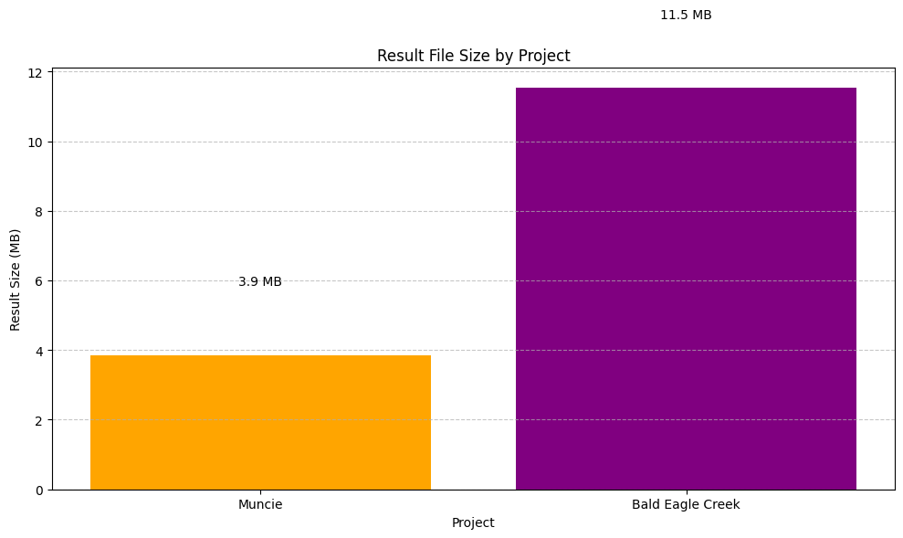
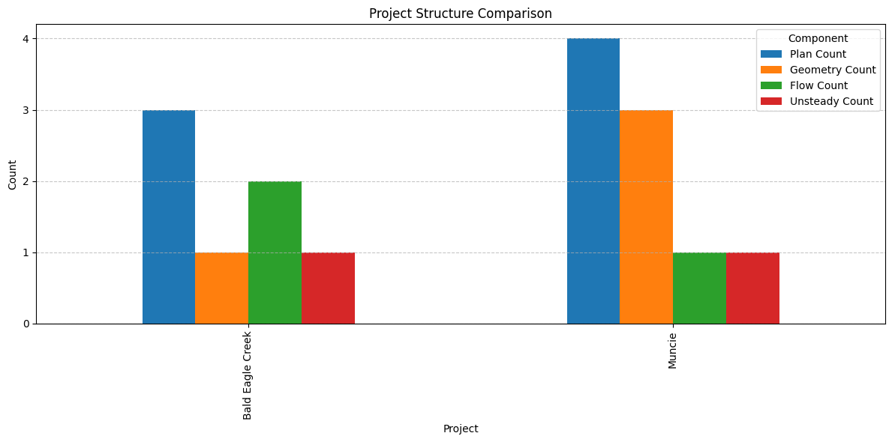

Multiple Project Operations¶
# =============================================================================
# DEVELOPMENT MODE TOGGLE
# =============================================================================
USE_LOCAL_SOURCE = False # <-- TOGGLE THIS
if USE_LOCAL_SOURCE:
import sys
from pathlib import Path
local_path = str(Path.cwd().parent)
if local_path not in sys.path:
sys.path.insert(0, local_path)
print(f"📁 LOCAL SOURCE MODE: Loading from {local_path}/ras_commander")
else:
print("📦 PIP PACKAGE MODE: Loading installed ras-commander")
# Import ras-commander
from ras_commander import RasCmdr, RasExamples, RasPlan, RasPrj, init_ras_project, ras
# Additional imports
import os
import numpy as np
import pandas as pd
from IPython import display
import matplotlib.pyplot as plt
import psutil # For getting system CPU info
from concurrent.futures import ThreadPoolExecutor, as_completed
import time
import subprocess
import shutil
# Verify which version loaded
import ras_commander
print(f"✓ Loaded: {ras_commander.__file__}")
📦 PIP PACKAGE MODE: Loading installed ras-commander
✓ Loaded: c:\Users\billk_clb\anaconda3\envs\rascmdr_piptest\Lib\site-packages\ras_commander\__init__.py
Prerequisites¶
Before running this notebook, ensure you have:
- ras-commander installed:
pip install ras-commander - Python 3.10+: Check with
python --version - HEC-RAS 6.3+: Required for plan execution
- Disk Space: ~2 GB (example projects + compute folders + results)
- CPU Cores: 2+ recommended for parallel execution
What You'll Learn¶
This notebook demonstrates advanced multi-project workflows - a powerful pattern for comparative analysis:
- Parallel Project Management: Initialize and track multiple HEC-RAS projects simultaneously
- Context Discipline: Pass
ras_objectparameter to avoid the globalrastrap (see.claude/rules/python/ras-commander-patterns.md) - Concurrent Execution: Run plans from different projects in parallel
- Result Comparison: Analyze differences between project configurations
Related Notebooks¶
- 101_project_initialization.ipynb - Learn single-project initialization first
- 113_parallel_execution.ipynb - Parallel execution within one project
- 103_plan_and_geometry_operations.ipynb - Plan cloning techniques
Critical Pattern: The ras_object Parameter¶
THE MOST IMPORTANT CONCEPT IN THIS NOTEBOOK:
When creating local ras objects (e.g., bald_eagle_ras = RasPrj()), you MUST pass them to ALL downstream function calls via the ras_object parameter.
Why? Most ras-commander functions accept optional ras_object parameter. If not provided, they fall back to the global ras object - causing file path resolution errors when working with multiple projects.
# ✅ CORRECT: Pass ras_object to every call
RasPlan.clone_plan("01", new_plan_shortid="demo", ras_object=bald_eagle_ras)
RasCmdr.compute_plan("demo", ras_object=bald_eagle_ras)
# ❌ WRONG: Missing ras_object - uses global ras!
RasPlan.clone_plan("01", new_plan_shortid="demo") # Will look in wrong project!
See .claude/rules/python/ras-commander-patterns.md for complete details.
Parameters¶
Configure these values to customize the notebook for your project.
# =============================================================================
# PARAMETERS - Edit these to customize the notebook
# =============================================================================
from pathlib import Path
# Project Configuration
PROJECT_NAME = "Muncie" # Example project to extract
RAS_VERSION = "6.6" # HEC-RAS version (6.3, 6.5, 6.6, etc.)
# Check system resources
cpu_count = psutil.cpu_count(logical=True)
physical_cpu_count = psutil.cpu_count(logical=False)
available_memory_gb = psutil.virtual_memory().available / (1024**3)
print(f"System Resources:")
print(f"- {physical_cpu_count} physical CPU cores ({cpu_count} logical cores)")
print(f"- {available_memory_gb:.1f} GB available memory")
print(f"For multiple HEC-RAS projects, a good rule of thumb is:")
print(f"- Assign 2-4 cores per project")
print(f"- Allocate at least 2-4 GB of RAM per project")
print(f"Based on your system, you could reasonably run {min(physical_cpu_count//2, int(available_memory_gb//3))} projects simultaneously.")
System Resources:
- 8 physical CPU cores (8 logical cores)
- 10.2 GB available memory
For multiple HEC-RAS projects, a good rule of thumb is:
- Assign 2-4 cores per project
- Allocate at least 2-4 GB of RAM per project
Based on your system, you could reasonably run 3 projects simultaneously.
Understanding Multiple RAS Project Management¶
When working with multiple HEC-RAS projects in RAS Commander, there are two important concepts to understand:
-
The Global 'ras' Object: By default, RAS Commander maintains a global
rasobject that represents the currently active project. This is convenient for simple scripts. -
Custom RAS Objects: For multiple projects, you'll create separate RAS objects for each project. These custom objects store project-specific data and are passed to RAS Commander functions using the
ras_objectparameter.
Best Practices for Multiple Project Management¶
- Name Your Objects Clearly: Use descriptive variable names for your RAS objects (e.g.,
bald_eagle_ras,muncie_ras) - Be Consistent: Always pass the appropriate RAS object to functions when working with multiple projects
- Avoid Using Global 'ras': When working with multiple projects, avoid using the global
rasobject to prevent confusion - Separate Compute Folders: Use separate computation folders for each project
- Manage Resources: Be mindful of CPU and memory usage when running multiple projects in parallel
Downloading and Extracting Example HEC-RAS Projects¶
We'll use the RasExamples class to download and extract two example HEC-RAS projects: "Balde Eagle Creek" and "Muncie".
# Extract the example projects using suffix parameter
extracted_paths = RasExamples.extract_project(
["Balde Eagle Creek", "Muncie"],
suffix="04" # Uses standardized suffix parameter
)
print(f"Extracted projects to:")
for path in extracted_paths:
print(f"- {path}")
# Define project paths
bald_eagle_path = extracted_paths[0] # First project (Balde Eagle Creek)
muncie_path = extracted_paths[1] # Second project (Muncie)
examples_dir = extracted_paths[0].parent
# Define computation output folders
bald_eagle_compute_folder = examples_dir / "compute_bald_eagle"
muncie_compute_folder = examples_dir / "compute_muncie"
# Verify the paths exist
print(f"\nBald Eagle Creek project exists: {bald_eagle_path.exists()}")
print(f"Muncie project exists: {muncie_path.exists()}")
print(f"Computation folders will be created at:")
print(f"- {bald_eagle_compute_folder}")
print(f"- {muncie_compute_folder}")
2025-12-28 22:07:38 - ras_commander.RasExamples - INFO - Found zip file: C:\Users\billk_clb\anaconda3\envs\rascmdr_piptest\Lib\site-packages\examples\Example_Projects_6_6.zip
2025-12-28 22:07:38 - ras_commander.RasExamples - INFO - Loading project data from CSV...
2025-12-28 22:07:38 - ras_commander.RasExamples - INFO - Loaded 68 projects from CSV.
2025-12-28 22:07:38 - ras_commander.RasExamples - INFO - ----- RasExamples Extracting Project -----
2025-12-28 22:07:38 - ras_commander.RasExamples - INFO - Extracting project 'Balde Eagle Creek' as 'Balde Eagle Creek_04'
2025-12-28 22:07:38 - ras_commander.RasExamples - INFO - Successfully extracted project 'Balde Eagle Creek' to C:\Users\billk_clb\anaconda3\envs\rascmdr_piptest\Lib\site-packages\examples\example_projects\Balde Eagle Creek_04
2025-12-28 22:07:38 - ras_commander.RasExamples - INFO - ----- RasExamples Extracting Project -----
2025-12-28 22:07:38 - ras_commander.RasExamples - INFO - Extracting project 'Muncie' as 'Muncie_04'
2025-12-28 22:07:39 - ras_commander.RasExamples - INFO - Successfully extracted project 'Muncie' to C:\Users\billk_clb\anaconda3\envs\rascmdr_piptest\Lib\site-packages\examples\example_projects\Muncie_04
Extracted projects to:
- C:\Users\billk_clb\anaconda3\envs\rascmdr_piptest\Lib\site-packages\examples\example_projects\Balde Eagle Creek_04
- C:\Users\billk_clb\anaconda3\envs\rascmdr_piptest\Lib\site-packages\examples\example_projects\Muncie_04
Bald Eagle Creek project exists: True
Muncie project exists: True
Computation folders will be created at:
- C:\Users\billk_clb\anaconda3\envs\rascmdr_piptest\Lib\site-packages\examples\example_projects\compute_bald_eagle
- C:\Users\billk_clb\anaconda3\envs\rascmdr_piptest\Lib\site-packages\examples\example_projects\compute_muncie
Step 1: Initialize Multiple Projects¶
Let's initialize both HEC-RAS projects. Instead of using the global ras object, we'll create separate RAS objects for each project.
# Initialize both projects with their own RAS objects
bald_eagle_ras = RasPrj()
init_ras_project(bald_eagle_path, RAS_VERSION, ras_object=bald_eagle_ras)
print(f"Initialized Bald Eagle Creek project: {bald_eagle_ras.project_name}")
muncie_ras = RasPrj()
init_ras_project(muncie_path, RAS_VERSION, ras_object=muncie_ras)
print(f"Initialized Muncie project: {muncie_ras.project_name}")
# Display available plans in each project
print("\nAvailable plans in Bald Eagle Creek project:")
display.display(bald_eagle_ras.plan_df)
print("\nAvailable plans in Muncie project:")
display.display(muncie_ras.plan_df)
2025-12-28 22:07:39 - ras_commander.rasmap - INFO - Successfully parsed RASMapper file: C:\Users\billk_clb\anaconda3\envs\rascmdr_piptest\Lib\site-packages\examples\example_projects\Balde Eagle Creek_04\BaldEagle.rasmap
2025-12-28 22:07:39 - ras_commander.rasmap - INFO - Successfully parsed RASMapper file: C:\Users\billk_clb\anaconda3\envs\rascmdr_piptest\Lib\site-packages\examples\example_projects\Muncie_04\Muncie.rasmap
Initialized Bald Eagle Creek project: BaldEagle
Initialized Muncie project: Muncie
Available plans in Bald Eagle Creek project:
| plan_number | unsteady_number | geometry_number | Plan Title | Program Version | Short Identifier | Simulation Date | Computation Interval | Mapping Interval | Run HTab | ... | PS Cores | DSS File | Friction Slope Method | HDF_Results_Path | Geom File | Geom Path | Flow File | Flow Path | full_path | flow_type | |
|---|---|---|---|---|---|---|---|---|---|---|---|---|---|---|---|---|---|---|---|---|---|
| 0 | 01 | 02 | 01 | Unsteady with Bridges and Dam | 5.00 | UnsteadyFlow | 18FEB1999,0000,24FEB1999,0500 | 2MIN | 1HOUR | 1 | ... | None | dss | 2 | None | 01 | C:\Users\billk_clb\anaconda3\envs\rascmdr_pipt... | 02 | C:\Users\billk_clb\anaconda3\envs\rascmdr_pipt... | C:\Users\billk_clb\anaconda3\envs\rascmdr_pipt... | Unsteady |
| 1 | 02 | None | 01 | Steady Flow Run | NaN | SteadyRun | 02/18/1999,0000,02/24/1999,0500 | 2MIN | NaN | 1 | ... | None | dss | 1 | None | 01 | C:\Users\billk_clb\anaconda3\envs\rascmdr_pipt... | 02 | C:\Users\billk_clb\anaconda3\envs\rascmdr_pipt... | C:\Users\billk_clb\anaconda3\envs\rascmdr_pipt... | Steady |
2 rows × 27 columns
Available plans in Muncie project:
| plan_number | unsteady_number | geometry_number | Plan Title | Program Version | Short Identifier | Simulation Date | Computation Interval | Mapping Interval | Run HTab | ... | Friction Slope Method | UNET D2 SolverType | UNET D2 Name | HDF_Results_Path | Geom File | Geom Path | Flow File | Flow Path | full_path | flow_type | |
|---|---|---|---|---|---|---|---|---|---|---|---|---|---|---|---|---|---|---|---|---|---|
| 0 | 01 | 01 | 01 | Unsteady Multi 9-SA run | 5.00 | 9-SAs | 02JAN1900,0000,02JAN1900,2400 | 15SEC | 5MIN | 1 | ... | 1 | NaN | NaN | None | 01 | C:\Users\billk_clb\anaconda3\envs\rascmdr_pipt... | 01 | C:\Users\billk_clb\anaconda3\envs\rascmdr_pipt... | C:\Users\billk_clb\anaconda3\envs\rascmdr_pipt... | Unsteady |
| 1 | 03 | 01 | 02 | Unsteady Run with 2D 50ft Grid | 5.10 | 2D 50ft Grid | 02JAN1900,0000,02JAN1900,2400 | 10SEC | 5MIN | -1 | ... | 1 | Pardiso (Direct) | 2D Interior Area | None | 02 | C:\Users\billk_clb\anaconda3\envs\rascmdr_pipt... | 01 | C:\Users\billk_clb\anaconda3\envs\rascmdr_pipt... | C:\Users\billk_clb\anaconda3\envs\rascmdr_pipt... | Unsteady |
| 2 | 04 | 01 | 04 | Unsteady Run with 2D 50ft User n Value R | 5.10 | 50ft User n Regions | 02JAN1900,0000,02JAN1900,2400 | 10SEC | 5MIN | 1 | ... | 1 | Pardiso (Direct) | 2D Interior Area | None | 04 | C:\Users\billk_clb\anaconda3\envs\rascmdr_pipt... | 01 | C:\Users\billk_clb\anaconda3\envs\rascmdr_pipt... | C:\Users\billk_clb\anaconda3\envs\rascmdr_pipt... | Unsteady |
3 rows × 30 columns
Step 2: Clone Plans in Each Project¶
Now, let's clone a plan in each project, giving them custom short identifiers. This demonstrates how to perform operations on multiple projects independently.
# Clone plans with custom short identifiers
new_bald_eagle_plan = RasPlan.clone_plan("01", new_plan_shortid="MultiProjDemo", ras_object=bald_eagle_ras)
print(f"Created new plan {new_bald_eagle_plan} in Bald Eagle Creek project")
new_muncie_plan = RasPlan.clone_plan("01", new_plan_shortid="MultiProjDemo", ras_object=muncie_ras)
print(f"Created new plan {new_muncie_plan} in Muncie project")
# Display the updated plan dataframes
print("\nUpdated plans in Bald Eagle Creek project:")
bald_eagle_ras.plan_df = bald_eagle_ras.get_plan_entries() # Refresh the plan dataframe
display.display(bald_eagle_ras.plan_df)
print("\nUpdated plans in Muncie project:")
muncie_ras.plan_df = muncie_ras.get_plan_entries() # Refresh the plan dataframe
display.display(muncie_ras.plan_df)
2025-12-28 22:07:39 - ras_commander.RasUtils - INFO - File cloned from C:\Users\billk_clb\anaconda3\envs\rascmdr_piptest\Lib\site-packages\examples\example_projects\Balde Eagle Creek_04\BaldEagle.p01 to C:\Users\billk_clb\anaconda3\envs\rascmdr_piptest\Lib\site-packages\examples\example_projects\Balde Eagle Creek_04\BaldEagle.p03
2025-12-28 22:07:39 - ras_commander.RasUtils - INFO - Successfully updated file: C:\Users\billk_clb\anaconda3\envs\rascmdr_piptest\Lib\site-packages\examples\example_projects\Balde Eagle Creek_04\BaldEagle.p03
2025-12-28 22:07:39 - ras_commander.RasUtils - INFO - Project file updated with new Plan entry: 03
2025-12-28 22:07:39 - ras_commander.rasmap - INFO - Successfully parsed RASMapper file: C:\Users\billk_clb\anaconda3\envs\rascmdr_piptest\Lib\site-packages\examples\example_projects\Balde Eagle Creek_04\BaldEagle.rasmap
2025-12-28 22:07:39 - ras_commander.RasUtils - INFO - File cloned from C:\Users\billk_clb\anaconda3\envs\rascmdr_piptest\Lib\site-packages\examples\example_projects\Muncie_04\Muncie.p01 to C:\Users\billk_clb\anaconda3\envs\rascmdr_piptest\Lib\site-packages\examples\example_projects\Muncie_04\Muncie.p02
2025-12-28 22:07:39 - ras_commander.RasUtils - INFO - Successfully updated file: C:\Users\billk_clb\anaconda3\envs\rascmdr_piptest\Lib\site-packages\examples\example_projects\Muncie_04\Muncie.p02
2025-12-28 22:07:39 - ras_commander.RasUtils - INFO - Project file updated with new Plan entry: 02
Created new plan 03 in Bald Eagle Creek project
2025-12-28 22:07:39 - ras_commander.rasmap - INFO - Successfully parsed RASMapper file: C:\Users\billk_clb\anaconda3\envs\rascmdr_piptest\Lib\site-packages\examples\example_projects\Muncie_04\Muncie.rasmap
Created new plan 02 in Muncie project
Updated plans in Bald Eagle Creek project:
| plan_number | unsteady_number | geometry_number | Plan Title | Program Version | Short Identifier | Simulation Date | Computation Interval | Mapping Interval | Run HTab | ... | UNET D2 Cores | PS Cores | DSS File | Friction Slope Method | HDF_Results_Path | Geom File | Geom Path | Flow File | Flow Path | full_path | |
|---|---|---|---|---|---|---|---|---|---|---|---|---|---|---|---|---|---|---|---|---|---|
| 0 | 01 | 02 | 01 | Unsteady with Bridges and Dam | 5.00 | UnsteadyFlow | 18FEB1999,0000,24FEB1999,0500 | 2MIN | 1HOUR | 1 | ... | 0.0 | None | dss | 2 | None | 01 | C:\Users\billk_clb\anaconda3\envs\rascmdr_pipt... | 02 | C:\Users\billk_clb\anaconda3\envs\rascmdr_pipt... | C:\Users\billk_clb\anaconda3\envs\rascmdr_pipt... |
| 1 | 02 | None | 01 | Steady Flow Run | NaN | SteadyRun | 02/18/1999,0000,02/24/1999,0500 | 2MIN | NaN | 1 | ... | NaN | None | dss | 1 | None | 01 | C:\Users\billk_clb\anaconda3\envs\rascmdr_pipt... | 02 | C:\Users\billk_clb\anaconda3\envs\rascmdr_pipt... | C:\Users\billk_clb\anaconda3\envs\rascmdr_pipt... |
| 2 | 03 | 02 | 01 | Unsteady with Bridges and Dam | 5.00 | MultiProjDemo | 18FEB1999,0000,24FEB1999,0500 | 2MIN | 1HOUR | 1 | ... | 0.0 | None | dss | 2 | None | 01 | C:\Users\billk_clb\anaconda3\envs\rascmdr_pipt... | 02 | C:\Users\billk_clb\anaconda3\envs\rascmdr_pipt... | C:\Users\billk_clb\anaconda3\envs\rascmdr_pipt... |
3 rows × 26 columns
Updated plans in Muncie project:
| plan_number | unsteady_number | geometry_number | Plan Title | Program Version | Short Identifier | Simulation Date | Computation Interval | Mapping Interval | Run HTab | ... | DSS File | Friction Slope Method | UNET D2 SolverType | UNET D2 Name | HDF_Results_Path | Geom File | Geom Path | Flow File | Flow Path | full_path | |
|---|---|---|---|---|---|---|---|---|---|---|---|---|---|---|---|---|---|---|---|---|---|
| 0 | 01 | 01 | 01 | Unsteady Multi 9-SA run | 5.00 | 9-SAs | 02JAN1900,0000,02JAN1900,2400 | 15SEC | 5MIN | 1 | ... | dss | 1 | NaN | NaN | None | 01 | C:\Users\billk_clb\anaconda3\envs\rascmdr_pipt... | 01 | C:\Users\billk_clb\anaconda3\envs\rascmdr_pipt... | C:\Users\billk_clb\anaconda3\envs\rascmdr_pipt... |
| 1 | 03 | 01 | 02 | Unsteady Run with 2D 50ft Grid | 5.10 | 2D 50ft Grid | 02JAN1900,0000,02JAN1900,2400 | 10SEC | 5MIN | -1 | ... | dss | 1 | Pardiso (Direct) | 2D Interior Area | None | 02 | C:\Users\billk_clb\anaconda3\envs\rascmdr_pipt... | 01 | C:\Users\billk_clb\anaconda3\envs\rascmdr_pipt... | C:\Users\billk_clb\anaconda3\envs\rascmdr_pipt... |
| 2 | 04 | 01 | 04 | Unsteady Run with 2D 50ft User n Value R | 5.10 | 50ft User n Regions | 02JAN1900,0000,02JAN1900,2400 | 10SEC | 5MIN | 1 | ... | dss | 1 | Pardiso (Direct) | 2D Interior Area | None | 04 | C:\Users\billk_clb\anaconda3\envs\rascmdr_pipt... | 01 | C:\Users\billk_clb\anaconda3\envs\rascmdr_pipt... | C:\Users\billk_clb\anaconda3\envs\rascmdr_pipt... |
| 3 | 02 | 01 | 01 | Unsteady Multi 9-SA run | 5.00 | MultiProjDemo | 02JAN1900,0000,02JAN1900,2400 | 15SEC | 5MIN | 1 | ... | dss | 1 | NaN | NaN | None | 01 | C:\Users\billk_clb\anaconda3\envs\rascmdr_pipt... | 01 | C:\Users\billk_clb\anaconda3\envs\rascmdr_pipt... | C:\Users\billk_clb\anaconda3\envs\rascmdr_pipt... |
4 rows × 29 columns
Step 3: Configure Plans for Both Projects¶
Let's configure the plans for both projects, setting geometry, number of cores, and other parameters. This demonstrates how to customize plans for different projects using the same code structure.
# Configure the Bald Eagle Creek plan
print("Configuring Bald Eagle Creek plan:")
RasPlan.set_geom(new_bald_eagle_plan, "01", ras_object=bald_eagle_ras)
RasPlan.set_num_cores(new_bald_eagle_plan, 2, ras_object=bald_eagle_ras)
# Update description and intervals
description = "Multi-project demonstration plan\nBald Eagle Creek project\nConfigured for parallel execution"
RasPlan.update_plan_description(new_bald_eagle_plan, description, ras_object=bald_eagle_ras)
RasPlan.update_plan_intervals(
new_bald_eagle_plan,
computation_interval="10SEC",
output_interval="5MIN",
ras_object=bald_eagle_ras
)
print("Successfully configured Bald Eagle Creek plan")
# Configure the Muncie plan
print("\nConfiguring Muncie plan:")
RasPlan.set_geom(new_muncie_plan, "01", ras_object=muncie_ras)
RasPlan.set_num_cores(new_muncie_plan, 2, ras_object=muncie_ras)
# Update description and intervals
description = "Multi-project demonstration plan\nMuncie project\nConfigured for parallel execution"
RasPlan.update_plan_description(new_muncie_plan, description, ras_object=muncie_ras)
RasPlan.update_plan_intervals(
new_muncie_plan,
computation_interval="10SEC",
output_interval="5MIN",
ras_object=muncie_ras
)
print("Successfully configured Muncie plan")
2025-12-28 22:07:39 - ras_commander.RasPlan - INFO - Updated Geom File in plan file to g01 for plan 03
Configuring Bald Eagle Creek plan:
2025-12-28 22:07:39 - ras_commander.RasPlan - INFO - Geometry for plan 03 set to 01
2025-12-28 22:07:39 - ras_commander.RasUtils - INFO - Constructed plan file path: C:\Users\billk_clb\anaconda3\envs\rascmdr_piptest\Lib\site-packages\examples\example_projects\Balde Eagle Creek_04\BaldEagle.p03
2025-12-28 22:07:39 - ras_commander.RasUtils - INFO - Successfully updated file: C:\Users\billk_clb\anaconda3\envs\rascmdr_piptest\Lib\site-packages\examples\example_projects\Balde Eagle Creek_04\BaldEagle.p03
2025-12-28 22:07:39 - ras_commander.RasPlan - INFO - Successfully updated intervals in plan file: C:\Users\billk_clb\anaconda3\envs\rascmdr_piptest\Lib\site-packages\examples\example_projects\Balde Eagle Creek_04\BaldEagle.p03
2025-12-28 22:07:39 - ras_commander.RasPlan - INFO - Updated Geom File in plan file to g01 for plan 02
2025-12-28 22:07:39 - ras_commander.RasPlan - INFO - Geometry for plan 02 set to 01
2025-12-28 22:07:39 - ras_commander.RasUtils - INFO - Constructed plan file path: C:\Users\billk_clb\anaconda3\envs\rascmdr_piptest\Lib\site-packages\examples\example_projects\Muncie_04\Muncie.p02
2025-12-28 22:07:39 - ras_commander.RasUtils - INFO - Successfully updated file: C:\Users\billk_clb\anaconda3\envs\rascmdr_piptest\Lib\site-packages\examples\example_projects\Muncie_04\Muncie.p02
2025-12-28 22:07:39 - ras_commander.RasPlan - INFO - Successfully updated intervals in plan file: C:\Users\billk_clb\anaconda3\envs\rascmdr_piptest\Lib\site-packages\examples\example_projects\Muncie_04\Muncie.p02
Successfully configured Bald Eagle Creek plan
Configuring Muncie plan:
Successfully configured Muncie plan
Step 4: Create Compute Folders for Both Projects¶
Now, let's create separate compute folders for each project. This allows us to run the computations separately and in parallel.
# Create compute folders or clean them if they already exist
# Note: Only cleaning compute folders, not the source projects
for folder in [bald_eagle_compute_folder, muncie_compute_folder]:
# Safety check: only delete folders that are within examples_dir
if folder.exists() and examples_dir in folder.parents:
shutil.rmtree(folder)
print(f"Removed existing compute folder: {folder}")
folder.mkdir(parents=True, exist_ok=True)
print(f"Created compute folder: {folder}")
Created compute folder: C:\Users\billk_clb\anaconda3\envs\rascmdr_piptest\Lib\site-packages\examples\example_projects\compute_bald_eagle
Created compute folder: C:\Users\billk_clb\anaconda3\envs\rascmdr_piptest\Lib\site-packages\examples\example_projects\compute_muncie
Step 5: Define Project Execution Function¶
Let's define a function to execute plans for each project, which we can run in parallel. This function will handle plan execution, timing, and provide detailed status updates.
def execute_plan(plan_number, ras_object, compute_folder, project_name):
"""
Execute a HEC-RAS plan and return detailed information about the execution.
Args:
plan_number (str): The plan number to execute
ras_object: The RAS project object
compute_folder (Path): Folder where computation will be performed
project_name (str): A descriptive name for the project
Returns:
dict: Detailed information about the execution
"""
print(f"Starting execution of plan {plan_number} for {project_name}...")
# Record start time
start_time = time.time()
# Execute the plan in the compute folder
success = RasCmdr.compute_plan(
plan_number=plan_number,
ras_object=ras_object,
dest_folder=compute_folder,
clear_geompre=True
)
# Record end time and calculate duration
end_time = time.time()
duration = end_time - start_time
# Determine if results were created
result_path = None
result_size = None
try:
# Initialize a temporary RAS object in the compute folder to check results
compute_ras = init_ras_project(compute_folder, ras_object.ras_exe_path)
result_path = RasPlan.get_results_path(plan_number, ras_object=compute_ras)
if result_path:
result_file = Path(result_path)
if result_file.exists():
result_size = result_file.stat().st_size / (1024 * 1024) # Size in MB
except Exception as e:
print(f"Error checking results for {project_name}: {e}")
# Build result information
result_info = {
"project_name": project_name,
"plan_number": plan_number,
"success": success,
"duration": duration,
"compute_folder": str(compute_folder),
"result_path": str(result_path) if result_path else None,
"result_size_mb": result_size,
"timestamp": time.strftime("%Y-%m-%d %H:%M:%S")
}
print(f"Completed execution of plan {plan_number} for {project_name} in {duration:.2f} seconds")
return result_info
Verification: Parallel Execution¶
Success Criteria:
- ✓ Both projects execute without errors
- ✓ HDF files created in correct compute folders
- ✓ Execution times logged for performance comparison
- ✓ results list contains two dictionaries with project metadata
What to Check:
# Verify both executions succeeded
assert len(results) == 2, "Expected 2 project results"
for result in results:
hdf_file = Path(result['hdf_path'])
assert hdf_file.exists(), f"HDF file not created: {hdf_file}"
print(f"✓ {result['project_name']}: {hdf_file.stat().st_size / 1e6:.1f} MB")
Visual Inspection: 1. Open both projects in HEC-RAS GUI 2. Load plans created by cloning ("MultiProjDemo" plan) 3. View results in RAS Mapper to confirm valid outputs
Performance Analysis:
The parallel execution should complete in approximately the time of the longest plan, not the sum:
- Sequential: time_project1 + time_project2
- Parallel: max(time_project1, time_project2)
Audit Trail¶
Export execution metadata for documentation:
import pandas as pd
audit_df = pd.DataFrame(results)
audit_df.to_csv('multiple_project_execution_audit.csv', index=False)
print("Audit trail saved to: multiple_project_execution_audit.csv")
This audit trail documents: - Which projects were executed - When execution occurred - How long each took - Where results are stored
Step 6: Execute Plans for Both Projects in Parallel¶
Now, let's run both projects in parallel using a ThreadPoolExecutor. This allows us to utilize our system resources efficiently.
print("Executing plans for both projects in parallel...")
print("This may take several minutes...")
# Define the execution tasks
execution_tasks = [
(new_bald_eagle_plan, bald_eagle_ras, bald_eagle_compute_folder, "Bald Eagle Creek"),
(new_muncie_plan, muncie_ras, muncie_compute_folder, "Muncie")
]
results = []
# Execute the plans in parallel using ThreadPoolExecutor
with ThreadPoolExecutor(max_workers=2) as executor:
futures = [
executor.submit(execute_plan, *task)
for task in execution_tasks
]
# Collect results as they complete
for future in as_completed(futures):
try:
result = future.result()
results.append(result)
except Exception as e:
print(f"Execution error: {e}")
print("\nAll executions complete!")
Executing plans for both projects in parallel...
This may take several minutes...
Starting execution of plan 03 for Bald Eagle Creek...
2025-12-28 22:07:39 - ras_commander.RasCmdr - INFO - Using ras_object with project folder: C:\Users\billk_clb\anaconda3\envs\rascmdr_piptest\Lib\site-packages\examples\example_projects\Balde Eagle Creek_04
2025-12-28 22:07:39 - ras_commander.RasCmdr - INFO - Using ras_object with project folder: C:\Users\billk_clb\anaconda3\envs\rascmdr_piptest\Lib\site-packages\examples\example_projects\Muncie_04
2025-12-28 22:07:39 - ras_commander.RasCmdr - INFO - Copied project folder to destination: C:\Users\billk_clb\anaconda3\envs\rascmdr_piptest\Lib\site-packages\examples\example_projects\compute_bald_eagle
2025-12-28 22:07:39 - ras_commander.rasmap - INFO - Successfully parsed RASMapper file: C:\Users\billk_clb\anaconda3\envs\rascmdr_piptest\Lib\site-packages\examples\example_projects\compute_bald_eagle\BaldEagle.rasmap
Starting execution of plan 02 for Muncie...
2025-12-28 22:07:39 - ras_commander.geom.GeomPreprocessor - INFO - Clearing geometry preprocessor file for single plan: C:\Users\billk_clb\anaconda3\envs\rascmdr_piptest\Lib\site-packages\examples\example_projects\compute_bald_eagle\BaldEagle.p03
2025-12-28 22:07:39 - ras_commander.geom.GeomPreprocessor - WARNING - No geometry preprocessor file found for: C:\Users\billk_clb\anaconda3\envs\rascmdr_piptest\Lib\site-packages\examples\example_projects\compute_bald_eagle\BaldEagle.p03
2025-12-28 22:07:39 - ras_commander.geom.GeomPreprocessor - INFO - Geometry dataframe updated successfully.
2025-12-28 22:07:39 - ras_commander.RasCmdr - INFO - Cleared geometry preprocessor files for plan: 03
2025-12-28 22:07:39 - ras_commander.RasCmdr - INFO - Running HEC-RAS from the Command Line:
2025-12-28 22:07:39 - ras_commander.RasCmdr - INFO - Running command: "C:\Program Files (x86)\HEC\HEC-RAS\6.6\Ras.exe" -c "C:\Users\billk_clb\anaconda3\envs\rascmdr_piptest\Lib\site-packages\examples\example_projects\compute_bald_eagle\BaldEagle.prj" "C:\Users\billk_clb\anaconda3\envs\rascmdr_piptest\Lib\site-packages\examples\example_projects\compute_bald_eagle\BaldEagle.p03"
2025-12-28 22:07:39 - ras_commander.RasCmdr - INFO - Copied project folder to destination: C:\Users\billk_clb\anaconda3\envs\rascmdr_piptest\Lib\site-packages\examples\example_projects\compute_muncie
2025-12-28 22:07:39 - ras_commander.rasmap - INFO - Successfully parsed RASMapper file: C:\Users\billk_clb\anaconda3\envs\rascmdr_piptest\Lib\site-packages\examples\example_projects\compute_muncie\Muncie.rasmap
2025-12-28 22:07:39 - ras_commander.geom.GeomPreprocessor - INFO - Clearing geometry preprocessor file for single plan: C:\Users\billk_clb\anaconda3\envs\rascmdr_piptest\Lib\site-packages\examples\example_projects\compute_muncie\Muncie.p02
2025-12-28 22:07:39 - ras_commander.geom.GeomPreprocessor - WARNING - No geometry preprocessor file found for: C:\Users\billk_clb\anaconda3\envs\rascmdr_piptest\Lib\site-packages\examples\example_projects\compute_muncie\Muncie.p02
2025-12-28 22:07:39 - ras_commander.geom.GeomPreprocessor - INFO - Geometry dataframe updated successfully.
2025-12-28 22:07:39 - ras_commander.RasCmdr - INFO - Cleared geometry preprocessor files for plan: 02
2025-12-28 22:07:39 - ras_commander.RasCmdr - INFO - Running HEC-RAS from the Command Line:
2025-12-28 22:07:39 - ras_commander.RasCmdr - INFO - Running command: "C:\Program Files (x86)\HEC\HEC-RAS\6.6\Ras.exe" -c "C:\Users\billk_clb\anaconda3\envs\rascmdr_piptest\Lib\site-packages\examples\example_projects\compute_muncie\Muncie.prj" "C:\Users\billk_clb\anaconda3\envs\rascmdr_piptest\Lib\site-packages\examples\example_projects\compute_muncie\Muncie.p02"
2025-12-28 22:08:13 - ras_commander.RasCmdr - INFO - HEC-RAS execution completed for plan: 02
2025-12-28 22:08:13 - ras_commander.RasCmdr - INFO - Total run time for plan 02: 33.83 seconds
2025-12-28 22:08:13 - ras_commander.rasmap - INFO - Successfully parsed RASMapper file: C:\Users\billk_clb\anaconda3\envs\rascmdr_piptest\Lib\site-packages\examples\example_projects\compute_muncie\Muncie.rasmap
Completed execution of plan 02 for Muncie in 33.98 seconds
2025-12-28 22:10:39 - ras_commander.RasCmdr - INFO - HEC-RAS execution completed for plan: 03
2025-12-28 22:10:39 - ras_commander.RasCmdr - INFO - Total run time for plan 03: 179.49 seconds
2025-12-28 22:10:39 - ras_commander.rasmap - INFO - Successfully parsed RASMapper file: C:\Users\billk_clb\anaconda3\envs\rascmdr_piptest\Lib\site-packages\examples\example_projects\compute_bald_eagle\BaldEagle.rasmap
Completed execution of plan 03 for Bald Eagle Creek in 179.58 seconds
All executions complete!
Step 7: Analyze Results¶
Let's analyze the results from both project executions, comparing execution times, result sizes, etc.
# Create a DataFrame from the results
results_df = pd.DataFrame(results)
# Display the results table
print("Execution Results Summary:")
display.display(results_df[['project_name', 'plan_number', 'success', 'duration', 'result_size_mb']])
# Create a bar chart for execution times
plt.figure(figsize=(10, 6))
plt.bar(results_df['project_name'], results_df['duration'], color=['blue', 'green'])
plt.title('Execution Time by Project')
plt.xlabel('Muncie Plan 02 vs Bald Eagle Creek Plan 02\n (2 separate projects, for demonstration purposes only)')
plt.ylabel('Execution Time (seconds)')
plt.grid(axis='y', linestyle='--', alpha=0.7)
# Add duration values on top of the bars
for i, duration in enumerate(results_df['duration']):
plt.text(i, duration + 5, f"{duration:.1f}s", ha='center')
plt.tight_layout()
plt.show()
# If we have result sizes, create a chart for those as well
if results_df['result_size_mb'].notna().any():
plt.figure(figsize=(10, 6))
plt.bar(results_df['project_name'], results_df['result_size_mb'], color=['orange', 'purple'])
plt.title('Result File Size by Project')
plt.xlabel('Project')
plt.ylabel('Result Size (MB)')
plt.grid(axis='y', linestyle='--', alpha=0.7)
# Add size values on top of the bars
for i, size in enumerate(results_df['result_size_mb']):
if pd.notna(size):
plt.text(i, size + 2, f"{size:.1f} MB", ha='center')
plt.tight_layout()
plt.show()
Execution Results Summary:
| project_name | plan_number | success | duration | result_size_mb | |
|---|---|---|---|---|---|
| 0 | Muncie | 02 | True | 33.976737 | 3.857895 |
| 1 | Bald Eagle Creek | 03 | True | 179.577613 | 11.529897 |


Step 9: Compare Two HEC-RAS Projects¶
Let's create a utility function to compare the structures of the two HEC-RAS projects. This helps us understand the differences between the projects we're working with.
def compare_project_structures(ras_object1, name1, ras_object2, name2):
"""
Compare the structures of two HEC-RAS projects and display differences.
"""
# Refresh all dataframes to ensure we have the latest data
ras_object1.plan_df = ras_object1.get_plan_entries()
ras_object1.geom_df = ras_object1.get_geom_entries()
ras_object1.flow_df = ras_object1.get_flow_entries()
ras_object1.unsteady_df = ras_object1.get_unsteady_entries()
ras_object2.plan_df = ras_object2.get_plan_entries()
ras_object2.geom_df = ras_object2.get_geom_entries()
ras_object2.flow_df = ras_object2.get_flow_entries()
ras_object2.unsteady_df = ras_object2.get_unsteady_entries()
# Create a comparison dictionary
comparison = {
'Project Name': [ras_object1.project_name, ras_object2.project_name],
'Plan Count': [len(ras_object1.plan_df), len(ras_object2.plan_df)],
'Geometry Count': [len(ras_object1.geom_df), len(ras_object2.geom_df)],
'Flow Count': [len(ras_object1.flow_df), len(ras_object2.flow_df)],
'Unsteady Count': [len(ras_object1.unsteady_df), len(ras_object2.unsteady_df)]
}
# Create a DataFrame for the comparison
comparison_df = pd.DataFrame(comparison, index=[name1, name2])
# Display the comparison
print("Project Structure Comparison:")
display.display(comparison_df)
# Create a bar chart to visualize the comparison
plt.figure(figsize=(12, 6))
comparison_df.iloc[:, 1:].plot(kind='bar', ax=plt.gca())
plt.title('Project Structure Comparison')
plt.xlabel('Project')
plt.ylabel('Count')
plt.legend(title='Component')
plt.grid(axis='y', linestyle='--', alpha=0.7)
# Set y-axis to only show whole numbers (integers)
ax = plt.gca()
ax.yaxis.set_major_locator(plt.MaxNLocator(integer=True))
plt.tight_layout()
plt.show()
return comparison_df
# Compare the structures of the two projects
comparison_df = compare_project_structures(
bald_eagle_ras, "Bald Eagle Creek",
muncie_ras, "Muncie"
)
Project Structure Comparison:
| Project Name | Plan Count | Geometry Count | Flow Count | Unsteady Count | |
|---|---|---|---|---|---|
| Bald Eagle Creek | BaldEagle | 3 | 1 | 2 | 1 |
| Muncie | Muncie | 4 | 3 | 1 | 1 |

This approach can also be used to programmatically compare 2 copies of the same project to ensure all of the plan parameters, boundary condition definitions, etc remained the same, and for other QAQC processes.¶
This will be shown in further examples in more detail.
Best Practices for Multiple Project Operations¶
When to Use Multiple Projects¶
Use Case 1: Comparative Analysis - Evaluate different modeling approaches - Before/after scenarios (existing vs proposed conditions) - Sensitivity analysis with different model parameters
Use Case 2: Batch Processing - Process multiple watersheds with same workflow - Apply calibration to multiple reaches - Generate reports for multiple projects
Use Case 3: Model Variants - Test different boundary conditions - Compare 1D vs 2D approaches - Evaluate bridge/culvert alternatives
Critical Gotchas¶
❌ Common Mistake: Missing ras_object Parameter
# Initialize two projects
project1_ras = RasPrj()
init_ras_project(project1_path, "6.6", ras_object=project1_ras)
project2_ras = RasPrj()
init_ras_project(project2_path, "6.6", ras_object=project2_ras)
# ❌ WRONG: Missing ras_object
new_plan = RasPlan.clone_plan("01", new_plan_shortid="test")
# ^ This will use the global ras object, not project1_ras!
# ✅ CORRECT: Always pass ras_object
new_plan = RasPlan.clone_plan("01", new_plan_shortid="test", ras_object=project1_ras)
Symptom: FileNotFoundError for files that should exist
Root Cause: Function looked in global ras project folder instead of specified project
Fix: Add ras_object=your_ras_instance to ALL function calls
See .claude/rules/python/ras-commander-patterns.md for complete documentation.
HEC-RAS Documentation¶
- User's Manual - Chapter 3: Project management and file organization https://www.hec.usace.army.mil/software/hec-ras/documentation.aspx
- Technical Reference - Appendix A: File format specifications
LLM Forward: Multi-Project Review¶
Multiple project workflows benefit from structured comparison:
def generate_project_comparison_report(ras_objects, names, output_file):
# Generate comparative analysis report
report = []
for ras_obj, name in zip(ras_objects, names):
report.append({
'project': name,
'num_plans': len(ras_obj.plan_df),
'num_cross_sections': len(ras_obj.geom_df), # Simplified
'project_file': str(ras_obj.prj_file),
})
df = pd.DataFrame(report)
df.to_csv(output_file, index=False)
print(f"Comparison report saved: {output_file}")
return df
# Usage
comparison = generate_project_comparison_report(
[bald_eagle_ras, muncie_ras],
["Bald Eagle Creek", "Muncie"],
"project_comparison.csv"
)
This enables: - Visual comparison: Open CSV in Excel for review - Audit trail: Document what was compared when - Reproducibility: Re-run analysis from saved configuration
Summary of Multiple Project Operations¶
In this notebook, we've demonstrated how to work with multiple HEC-RAS projects simultaneously using the RAS Commander library. We've covered the following key operations:
- Initializing Multiple Projects: Creating separate RAS objects for different projects
- Independent Configuration: Configuring plans with project-specific parameters
- Parallel Execution: Running computations from different projects simultaneously
- Resource Management: Organizing compute folders and tracking execution statistics
- Results Comparison: Analyzing and comparing results from different projects
- Advanced Workflows: Creating sensitivity plans and batch processing pipelines
Key Concepts¶
When working with multiple HEC-RAS projects in RAS Commander, remember these key concepts:
- Custom RAS Objects: Create and use separate RAS objects for each project
- Always Specify ras_object: Use the
ras_objectparameter in all function calls - Separate Compute Folders: Use separate folders for each project's computations
- Resource Management: Be mindful of CPU and memory usage when running in parallel
- Project Tracking: Keep track of which results belong to which project
Multiple Project Applications¶
Working with multiple projects unlocks advanced applications such as:
- Model Comparison: Compare results from different river systems
- Basin-wide Analysis: Analyze connected river systems in parallel
- Parameter Sweep: Test a range of parameters across multiple models
- Model Development: Develop and test models simultaneously
- Batch Processing: Process large sets of models in an automated pipeline
These capabilities make RAS Commander a powerful tool for large-scale hydraulic modeling and water resources management.